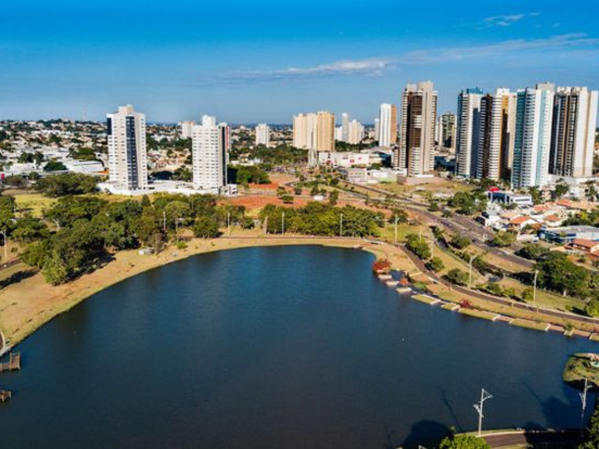

O Mato Grosso do Sul, localizado na região Centro-Oeste e com capital em Campo Grande, é conhecido por sua forte vocação agropecuária e pela exuberância natural, abrigando grande parte do bioma Pantanal. Criado em 1979, o estado também se destaca pela forte influência cultural e localização estratégica no Mercosul.
